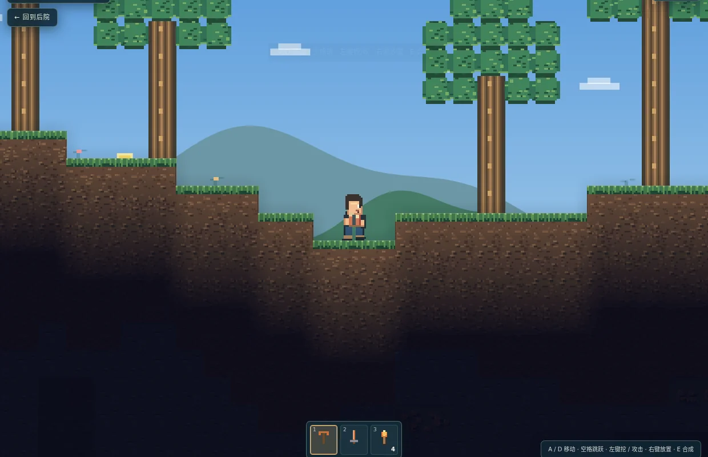
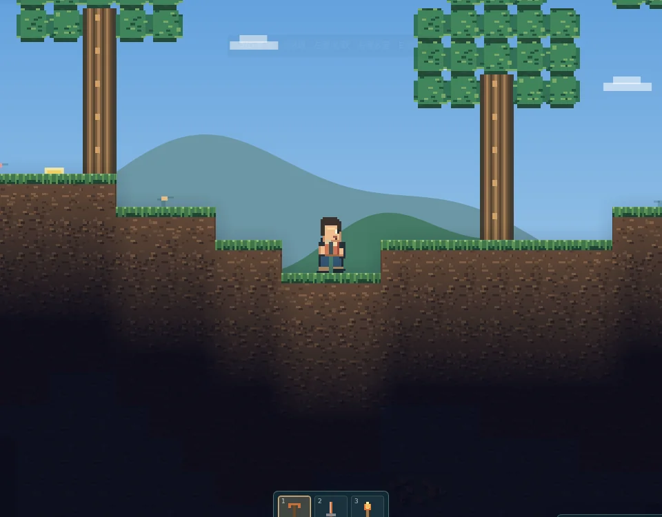
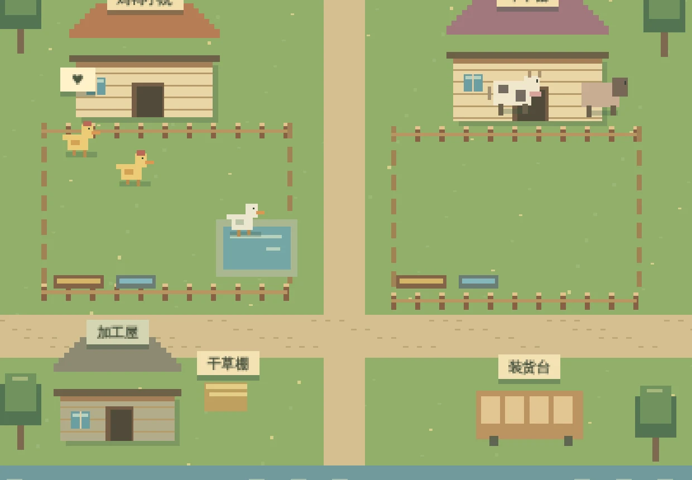

01 / EXPLORElyistr / PERSONAL SPACE
给想法一块
自由生长的地。
这里是后院。写点东西，做点游戏，把不必急着完成的念头，慢慢养起来。
从坡上的一棵树开始，往地下挖；或者先留下一句今天的心情。没有路线图，也不用赶时间。
PRESS START
↓ EXPLORE
↓ EXPLORE

一个可以挖到地底的地方 / A LITTLE WORLD BELOW
THINGS MADE HERE
后院里正在生长的
不是项目清单，是可以亲手点进去玩的角落。

02 / GROWA NOTE TO MYSELF
今天，留一句话。
不用写得像日记。想到什么就记什么，完成了可以点一下划掉。不想留下，也可以删掉。
仅保存在当前浏览器，不会公开，也不会同步到其他设备。